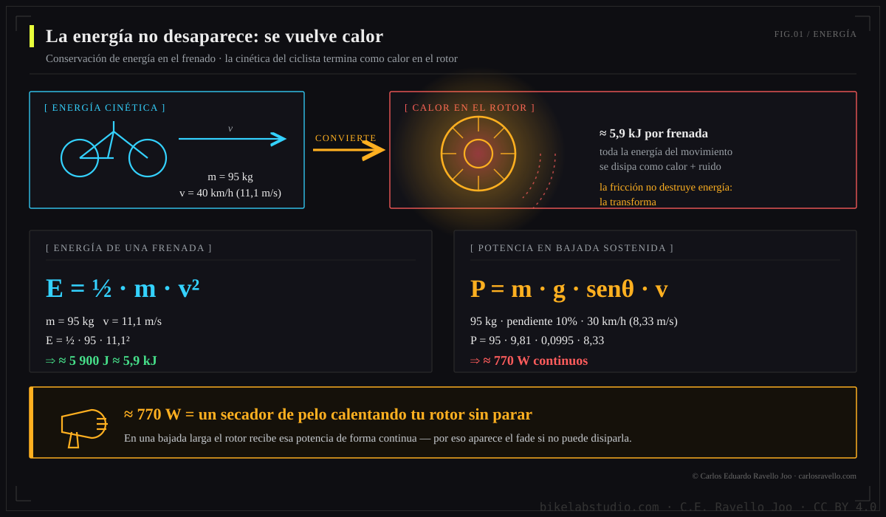
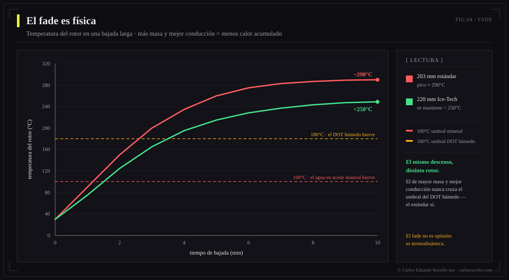
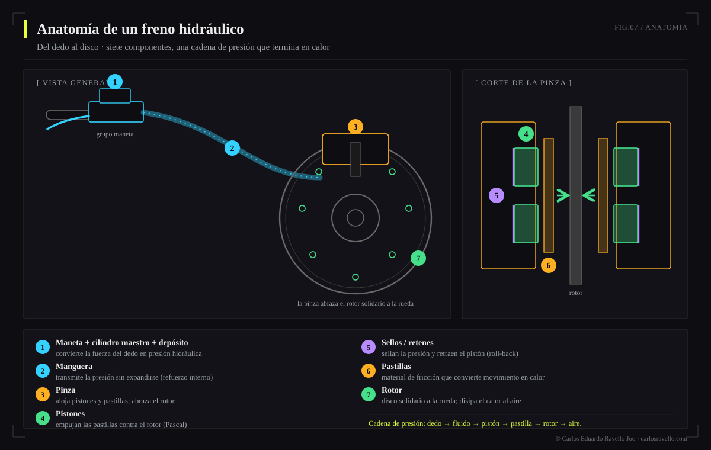

Un freno hidráulico convierte la energía del movimiento en calor (E = ½·m·v²) y la multiplica con la ventaja hidráulica (Pascal) para detenerte con un dedo. Su talón de Aquiles es el calor (fade) y la contaminación del fluido: el DOT absorbe agua, el aceite mineral la acumula en la pinza. Por eso purgar no es limpiar: si el fluido está degradado, se requiere servicio completo. En 2025-2026 el mercado saltó en potencia (Brembo GR-PRO, SRAM Maven, Shimano XTR M9220).
Esta es una obra de referencia, no un tutorial más. El objetivo es que entiendas por qué un freno se comporta como se comporta —con la física en la mano— y que tomes decisiones de fluido, pastillas, rotores y mantenimiento sobre evidencia y no sobre mitos de foro. Cada sección se puede leer suelta; juntas forman la referencia completa.
- La física del frenado: energía que se vuelve calor
- Ventaja hidráulica: por qué tu dedo detiene 100 kg
- El par y el radio del rotor
- El fade: cuando el calor gana
- Anatomía del sistema
- El fluido: DOT vs aceite mineral
- La verdad del purgado: por qué purgar no limpia
- Pastillas y rotores
- El mercado 2025-2026
- Mitos y verdades
1. La física del frenado: energía que se vuelve calor

Keily Sánchez
Con las manos en la maneta, en el taller de Trujillo. Disponible para trabajo editorial.
@sanchez.keily · @kei.san02 · Fotografía: Carlos Eduardo Ravello Joo
Frenar no es "agarrar la rueda": es un problema de conservación de la energía. La bicicleta y tú tenéis energía cinética por estar en movimiento, y el freno no la destruye —la transforma en calor por fricción entre pastilla y rotor—. Cuanto más rápido vas, el problema crece al cuadrado.
El caso temido no es la frenada puntual, sino la bajada larga: ahí el freno disipa potencia de forma sostenida, y la potencia térmica es brutal.

2. Ventaja hidráulica: por qué tu dedo detiene 100 kg
Un líquido es prácticamente incompresible y transmite la presión por igual en todas direcciones: es el principio de Pascal. El freno aprovecha esto con dos áreas distintas —un pistón pequeño en la maneta (cilindro maestro) y pistones grandes en la pinza—, multiplicando la fuerza.

3. El par y el radio del rotor
La fuerza de la pastilla actúa a una distancia del eje: el radio del rotor. El par de frenado —lo que realmente frena la rueda— es esa fuerza por ese radio.

4. El fade: cuando el calor gana
El fade (pérdida de potencia de frenado) ocurre cuando el sistema genera calor más rápido de lo que lo disipa. Dos cosas fallan: el fluido hierve (su vapor sí es compresible → maneta esponjosa, "vapor lock") y la pastilla se vitrifica. Aquí los umbrales importan: el agua atrapada en aceite mineral hierve a 100°C, el DOT húmedo cerca de 180°C, y una pastilla orgánica empieza a vidriarse hacia los 300°C.

En una bajada de 10 km, un rotor de 203 mm estándar puede alcanzar ~290°C, mientras un 220 mm con núcleo de aluminio (Ice-Tech) se mantiene por debajo de ~250°C: la superficie mayor y la mejor conducción entregan el calor al aire más rápido.
5. Anatomía del sistema
Entender las piezas es entender dónde falla. De la maneta al rotor, cada interfaz es un punto de presión, calor o contaminación.


6. El fluido: DOT vs aceite mineral
El fluido es el músculo invisible del freno. Hay dos familias químicamente incompatibles, y elegir mal —o mezclarlas— arruina los sellos. La diferencia clave es cómo se relacionan con el agua.
| Propiedad | DOT 4 | DOT 5.1 | Aceite mineral |
|---|---|---|---|
| Base | Glicol | Glicol | Petróleo refinado |
| Ebullición seco | ~230°C | ~270°C | ~225°C |
| Ebullición húmedo | ~155°C | ~180°C | n/a (no absorbe) |
| Relación con agua | Higroscópico | Higroscópico | Hidrofóbico |
| Corrosivo / daña pintura | Sí | Sí | No |
| Sellos | EPDM | EPDM | Nitrilo |
| Cambio | 6-12 meses | 6-12 meses | 12-24 meses |
| Marcas | SRAM, Hope, Hayes | SRAM, Hope | Shimano, Magura, TRP |

La paradoja del agua: el DOT la suspende en todo el circuito (baja gradual del punto de ebullición), mientras el mineral la rechaza y la deja caer al punto más bajo y caliente —la pinza—, donde hierve a 100°C y provoca un fade súbito. Ninguno es inmune; cada uno falla distinto.

7. La verdad del purgado: por qué purgar no limpia
Aquí está la tesis que casi nadie explica: un purgado simple saca aire y reemplaza parte del fluido, pero no limpia el sistema. Los sedimentos, el agua acumulada, las partículas de sellos desgastados y el fluido oxidado siguen ahí. Reinyectar fluido sobre esa contaminación raya pistones, hincha retenes y corroe la pinza.

"Si la maneta se siente bien tras el purgado, el sistema está sano." Falso. Un sistema puede tener pistones contaminados, sellos degradados y corrosión, y aun así sentirse correcto justo después de purgar. El daño sigue avanzando por dentro.
¿Cuándo basta purgar y cuándo toca servicio completo? El árbol de decisión lo resuelve por síntomas:


Regla de oro: cada intervención usa fluido nuevo. Rellenar o reutilizar reintroduce agua y partículas y no restaura las propiedades del fluido. El detalle fino del procedimiento por sistema lo desarrollamos en nuestra guía de purgado de frenos.
8. Pastillas y rotores
La pastilla es la interfaz donde nace el calor; el rotor, el disipador que debe soltarlo. Elegir compuesto es elegir un equilibrio entre mordida, resistencia al calor, ruido y desgaste.


9. El mercado 2025-2026
El frenado de bicicleta vive su salto más potente en años, empujado por el peso y la velocidad de las e-bikes y el descenso. Lo más relevante:
| Sistema | Novedad | Por qué importa |
|---|---|---|
| Brembo GR-PRO (2026) | Pinza 4×18 mm, aceite mineral propio, rotores 200-220 mm/2,3 mm, maneta con 3 ajustes | La marca de MotoGP entra al MTB; debut en Copa del Mundo DH con Specialized Gravity (~€800) |
| SRAM Maven | 4 pistones grandes (18 mm), de las más potentes del mercado | Potencia de referencia para gravity y e-bike |
| Shimano XTR M9220 (2025) | Nuevo aceite mineral de baja viscosidad | Resolvió el "punto de mordida errante" y el traqueteo de pastillas |
| Hope Tech 4 V4 / EVO+GR4 | Más potencia (+~6% el nuevo EVO), mecanizado CNC | Modulación y mantenibilidad de referencia |
| TRP DHR Evo / Magura MT7 | Cuatro pistones, enfoque descenso/e-bike | Gran relación potencia-valor y feel |
La tendencia es clara: pistones más grandes, rotores más gruesos, fluidos optimizados y menos obsesión por el peso a favor de la estabilidad térmica.
10. Mitos y verdades
| Mito | Verdad |
|---|---|
| "Más grasa/fluido = mejor" | El exceso o el fluido viejo no mejora nada; lo que importa es fluido nuevo y limpio, y sin aire. |
| "Purgar lo deja como nuevo" | Purgar no limpia contaminación ya instalada; a veces hace falta servicio completo. |
| "DOT y mineral son intercambiables" | No. Mezclarlos destruye los sellos (EPDM vs nitrilo). |
| "Apretar más fuerte frena más" | El par lo da el sistema y el radio del rotor; sobreapretar tornillos no añade potencia. |
| "Pastilla metálica siempre es mejor" | Depende del calor y terreno; en uso suave, la orgánica muerde mejor y es más silenciosa. |
BikeLab Studio.
Preguntas Frecuentes
¿Por qué se calienta tanto un freno de bicicleta?
Porque frenar convierte energía cinética en calor (E = ½·m·v²). En una bajada del 10% a 30 km/h, un sistema de 95 kg disipa ~770 W continuos —como un secador apuntando al rotor sin parar—, y por eso aparece el fade cuando el calor supera la disipación.
¿Qué es mejor, DOT o aceite mineral?
Ninguno es "mejor": son químicas distintas y no intercambiables. El DOT es higroscópico (baja su ebullición con el tiempo) y tolera más temperatura; el mineral es estable, pero el agua que entra se acumula en la pinza y hierve a 100°C. Usa el que pida tu fabricante y nunca los mezcles.
¿Purgar el freno lo deja como nuevo?
No siempre. Purgar saca aire y algo de fluido, pero no limpia sedimentos, agua ni partículas. Si el fluido está oscuro, los pistones pegajosos o hay corrosión, hace falta servicio completo con limpieza y, a veces, kit de sellos.
¿Pastillas orgánicas, sinterizadas o semimetálicas?
Orgánicas: mordida nítida y silenciosas, pero se vitrifican hacia 300°C. Sinterizadas: aguantan más calor, ideales para descenso/e-bike, con algo de ruido y desgaste de rotor. Semimetálicas: el punto medio.
¿Brembo hace frenos de bicicleta?
Sí. En 2026 presentó el GR-PRO para MTB: pinza de 4 pistones de 18 mm con aceite mineral propio, rotores 200-220 mm y maneta con tres ajustes, con herencia de MotoGP. Debutó en la Copa del Mundo de DH con Specialized Gravity.
¿Cada cuánto se da servicio a un freno hidráulico?
Fluido: DOT cada 6-12 meses, mineral cada 12-24. Purgado: cuando la maneta se siente esponjosa. Servicio completo: cada 1-2 años en uso intenso, e-bike o clima húmedo, o ante síntomas de contaminación.
Referencias
- BikeRadar — Brake fluid: mineral oil vs DOT.
- Pinkbike — Brembo GR-PRO MTB brake system; Big Brake Test 2026.
- Epic Bleed Solutions — DOT vs mineral oil; degradación y contaminación del fluido.
- BikeRadar — Disc brake pads: organic vs sintered vs semi-metallic.
- ScienceDirect / literatura de ingeniería — disipación térmica de discos y brake fade.
- Manuales de fabricante (Shimano, SRAM, Magura, Hope) — fluidos, pares y procedimientos de purgado.
¿Necesitas saber qué monta tu bici —Post Mount vs Flat Mount, Center Lock vs 6 tornillos, qué rotor le entra? Está todo en el Clúster Frenos de BikeLab-pedia.